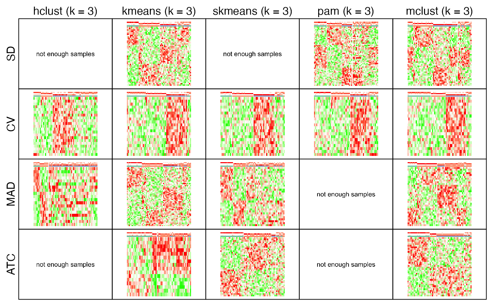

Collect plots from ConsensusPartitionList object
collect_plots-ConsensusPartitionList-method.RdCollect plots from ConsensusPartitionList object
# S4 method for ConsensusPartitionList collect_plots(object, k = 2, fun = consensus_heatmap, top_value_method = object@top_value_method, partition_method = object@partition_method, verbose = TRUE, mc.cores = 1, ...)
Arguments
| object | A |
|---|---|
| k | Number of subgroups. |
| fun | Function used to generate plots. Valid functions are |
| top_value_method | A vector of top-value methods. |
| partition_method | A vector of partitioning methods. |
| verbose | Whether to print message. |
| mc.cores | Number of cores. On OSX it is enforced to be 1. |
| ... | other Arguments passed to corresponding |
Details
Plots for all combinations of top-value methods and parittioning methods are arranged in one single page.
This function makes it easy to directly compare results from multiple methods.
Value
No value is returned.
See also
collect_plots,ConsensusPartition-method collects plots for a single ConsensusPartition-class object.
Examples
#> * applying consensus_heatmap() for SD:hclust.#> * applying consensus_heatmap() for SD:kmeans.#> * applying consensus_heatmap() for SD:skmeans.#> * applying consensus_heatmap() for SD:pam.#> * applying consensus_heatmap() for SD:mclust.#> * applying consensus_heatmap() for CV:hclust.#> * applying consensus_heatmap() for CV:kmeans.#> * applying consensus_heatmap() for CV:skmeans.#> * applying consensus_heatmap() for CV:pam.#> * applying consensus_heatmap() for CV:mclust.#> * applying consensus_heatmap() for MAD:hclust.#> * applying consensus_heatmap() for MAD:kmeans.#> * applying consensus_heatmap() for MAD:skmeans.#> * applying consensus_heatmap() for MAD:pam.#> * applying consensus_heatmap() for MAD:mclust.#> * applying consensus_heatmap() for ATC:hclust.#> * applying consensus_heatmap() for ATC:kmeans.#> * applying consensus_heatmap() for ATC:skmeans.#> * applying consensus_heatmap() for ATC:pam.#> * applying consensus_heatmap() for ATC:mclust.#> * applying membership_heatmap() for SD:hclust.#> * applying membership_heatmap() for SD:kmeans.#> * applying membership_heatmap() for SD:skmeans.#> * applying membership_heatmap() for SD:pam.#> * applying membership_heatmap() for SD:mclust.#> * applying membership_heatmap() for CV:hclust.#> * applying membership_heatmap() for CV:kmeans.#> * applying membership_heatmap() for CV:skmeans.#> * applying membership_heatmap() for CV:pam.#> * applying membership_heatmap() for CV:mclust.#> * applying membership_heatmap() for MAD:hclust.#> * applying membership_heatmap() for MAD:kmeans.#> * applying membership_heatmap() for MAD:skmeans.#> * applying membership_heatmap() for MAD:pam.#> * applying membership_heatmap() for MAD:mclust.#> * applying membership_heatmap() for ATC:hclust.#> * applying membership_heatmap() for ATC:kmeans.#> * applying membership_heatmap() for ATC:skmeans.#> * applying membership_heatmap() for ATC:pam.#> * applying membership_heatmap() for ATC:mclust.#> * applying get_signatures() for SD:hclust.#> * applying get_signatures() for SD:kmeans.#> * applying get_signatures() for SD:skmeans.#> * applying get_signatures() for SD:pam.#> * applying get_signatures() for SD:mclust.#> * applying get_signatures() for CV:hclust.#> * applying get_signatures() for CV:kmeans.#> * applying get_signatures() for CV:skmeans.#> * applying get_signatures() for CV:pam.#> * applying get_signatures() for CV:mclust.#> * applying get_signatures() for MAD:hclust.#> * applying get_signatures() for MAD:kmeans.#> * applying get_signatures() for MAD:skmeans.#> * applying get_signatures() for MAD:pam.#> * applying get_signatures() for MAD:mclust.#> * applying get_signatures() for ATC:hclust.#> * applying get_signatures() for ATC:kmeans.#> * applying get_signatures() for ATC:skmeans.#> * applying get_signatures() for ATC:pam.#> * applying get_signatures() for ATC:mclust.# }